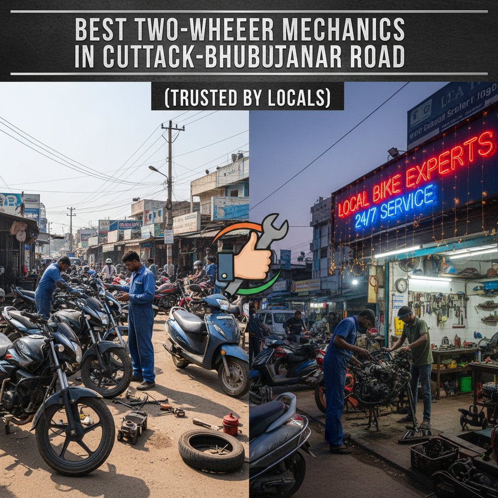
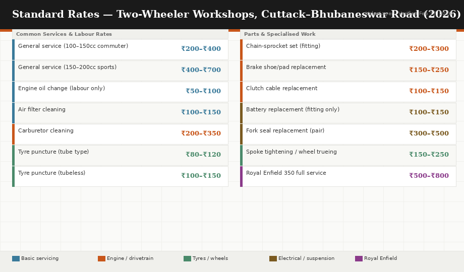

Best Two-Wheeler Mechanics on Cuttack–Bhubaneswar Road: Trusted by Locals
📅 February 17, 2026📍 Verified across 7 workshops on NH-16👤 By Rajan Pattnaik⏱ 11 min read

Verified on the ground: I rode the Cuttack–Bhubaneswar stretch on February 17, 2026, stopping at seven workshops between Chintamaniswar Square and Rasulgarh Chowk to check what they charge, what bikes they specialise in — and at one of them, sat down with the head mechanic for a conversation about what most riders are doing wrong to their bikes.
The NH-16 corridor between Bhubaneswar and Cuttack is one of Odisha's busiest stretches of road — and that means it has one of the most concentrated clusters of two-wheeler workshops in the state. From authorised showroom service centres to the one-man roadside mechanic who has been fixing the same families' Splendors and Activas for twenty years, the range is enormous. Knowing who to trust, and for what job, is the real skill.
Why This Road Has the Best Mechanics
The Cuttack–Bhubaneswar Road — passing through Chintamaniswar Square, Bomikhal, Rasulgarh, Palasuni, and Mancheswar before reaching Cuttack — developed its concentration of workshops organically over decades. The road has space for workshops on both sides, connects to the Mancheswar Industrial Area where spare parts distributors are clustered, and carries the city's highest daily two-wheeler traffic. If a part isn't available at your mechanic, he can get it from Mancheswar in under an hour.
The authorised Honda two-wheeler service centre on the Cuttack Road stretch and the most established workshop at Chintamaniswar Square. If you own a Honda Activa — and judging by the parking lot, half of Bhubaneswar does — this is where you come for authorised service, warranty repairs, and genuine spare parts. The mechanics are trained at Honda's regional centre and do not improvise, which is good for warranty work but sometimes slower than an experienced independent shop for straightforward repairs.
What locals say: Reliable, genuine parts, proper job card and bill. Weekday mornings can have a 2–3 hour wait if you don't book ahead. Good for warranty claims — not the fastest for a simple oil change.
Near Rasulgarh Chowk, off the Cuttack Road–Bomikhal junction
Independent · Multi-Brand
📍 Rasulgarh Chowk⏰ 8 AM–8 PM daily including Sunday🏍️ Hero · Bajaj · Honda · Yamaha · TVS · Known for Pulsar & Splendor
Ashok Auto Workshop is the kind of place you find by word of mouth, not by searching online. It has been at the same spot near Rasulgarh Chowk for over 15 years. The owner — whom regulars call Ashok bhai — handles diagnosis himself on any bike he hasn't seen before, rather than delegating to a junior mechanic. This personal oversight is why residents from as far as Saheed Nagar and Acharya Vihar drive past closer workshops to come here.
Hero Splendor general service₹250–₹350 + parts
Bajaj Pulsar 150 service₹350–₹500 + parts
Engine oil (Motul/Castrol)₹400–₹500 incl. oil
Tyre puncture₹80–₹120
Clutch plate (Pulsar)₹600–₹900 incl. parts
Chain-sprocket set (Pulsar)₹900–₹1,400 incl. parts
What locals say: "Kaam sahi karta hai, aur seedha bolta hai — yeh part nahi chahiye, yeh change karo." That directness — telling you what genuinely needs repair versus what can wait — is exactly what's rare and why he has a loyal customer base across three localities.
Multi-brand repairsEngine diagnosticsHonest advice on what's actually neededPulsar & Splendor work
3
TVS Authorised Service Centre
Opposite Falcon House, Plot No. 5D, Cuttack Road, near Budheswari
The authorised TVS service centre on this stretch handles warranty work and periodic servicing for TVS owners across the Bhubaneswar–Cuttack corridor. The Apache RTR series is very popular among young riders in Bhubaneswar, and this centre has the trained staff and TVS-original parts for it. The in-house spare parts counter is well-stocked for common TVS models.
What locals say: Job cards are properly maintained, warranty documentation is clean. Gets crowded on Saturday — arrive before 10 AM or book in advance. Well-stocked parts counter means less waiting for common TVS components.
Near Saptasati Mandir Square, Palasuni — 4–5 independent workshops, not one specific shop
Independent Cluster
📍 Saptasati Mandir Square, Palasuni–Rasulgarh stretch⏰ 8 AM–9 PM, most shops daily🏍️ All brands · Royal Enfield · Older bikes · Budget repairs
The Palasuni stretch near Saptasati Mandir Square is where you go for good work at honest prices without the authorised service centre premium. This cluster has built a reputation specifically among Royal Enfield owners — the Bullet 350 and Classic 350 crowd from across Bhubaneswar makes the trip here because two of the shop owners have deep familiarity with Enfield engine quirks that the official RE service centre near Khandagiri Square reportedly charges significantly more for.
Royal Enfield 350 general service₹500–₹800 labour
Hero Passion / HF Deluxe₹200–₹300 labour
Yamaha FZ / R15 service₹400–₹600 labour
Tyre replacement (fitting only)₹100–₹150 per tyre
Chain-sprocket set (Pulsar)₹900–₹1,400 incl. parts
Second-hand bike inspection₹200–₹400
What locals say: The RE community in Bhubaneswar considers this cluster their first choice for independent Enfield work. Cheaper than the official RE service centre, and the mechanics here know the Bullet's quirks from years of working on them.
Royal EnfieldOlder bikesBudget repairsSecond-hand bike pre-purchase checks
5
Bike Mecanico
Based in Bhubaneswar — doorstep service across all areas including Cuttack Road belt
Bike Mecanico is worth knowing for one specific situation: breakdown on the Cuttack–Bhubaneswar Road itself, or when you cannot move the bike to a workshop. They dispatch a mechanic with tools to your location — roadside, flat parking, or building basement. Not a substitute for a full workshop for complex jobs, but extremely useful for punctures, battery jumps, minor electrical faults, chain adjustment, and anything that doesn't require a lift or engine disassembly.
Doorstep basic service₹599–₹899
Puncture fix at your location₹150–₹250
Battery jump / replacement₹200–₹400 + battery
Chain lubrication + adjustment₹150–₹200
Best for: Breakdowns on the road, WFH situations where you can't take a day off to sit at a workshop, quick tyre or battery jobs without moving the bike.
Road breakdownsBattery & puncture at homeNH-16 roadside emergencies
The Mechanic Interview: Suresh Sahoo, 22 Years on Cuttack Road
I sat with Suresh Sahoo, who runs an independent workshop at the Bomikhal–Cuttack Road junction for over 20 minutes on February 17, 2026. He has been at the same spot since 2004. This is what he said, in his words and mine.
S
In Conversation
Suresh Sahoo
Independent Mechanic · Bomikhal–Cuttack Road Junction · Working since 2004
On the most common mistake riders make
"Engine oil. Log mahine mahine nahi badalte. Teen mahine, chaar mahine, phir aate hain — abhi awaz aa rahi hai bhai, kya kare. Tab tak piston ring ya baaring toot jaata hai."
Translation: Not changing engine oil on time is the single biggest cause of avoidable engine damage he sees. A ₹400–₹500 oil change every 2,000–3,000 km prevents ₹5,000–₹15,000 engine repairs. Basic work — but riders keep missing it until something breaks.
On fake and substandard spare parts
"Kaafi log parts lekar aate hain baahar se — bolte hain sasta mila. Main pehchaan leta hoon. Piston jo aaya tha ek baar, plastic jaisa feel tha. Itna paatla tha. Bola main nahi lagaunga. Toh unka gussa hua. Par main kya karoon — agar ek mahine mein toot gaya toh mujhe hi gaali padega."
Translation: He refuses to fit parts that customers bring from suspicious cheap sources — because his reputation, not the parts seller's, suffers when it fails. He can identify fake parts by feel and weight. This is the honest mechanic's dilemma on every road in India, and his answer is the right one.
On what to say to avoid getting overcharged
"Pehle diagnosis karo. Yeh bolna chahiye: bhai pehle dekho, phir parts ki list do, phir decide karenge. Jo seedha bolta hai 'itne ka ho jaayega' bina dekhe — woh aksar inflate karta hai."
Translation: Never agree to a price before the mechanic has physically inspected the bike and given you a parts list. Any quote given without inspection is likely inflated. The one who checks first and then estimates is usually honest. The one who names a price before looking — usually isn't.
On the best time to visit a workshop
"Subah 8–10 baje. Uske baad queue lag jaata hai. Aur Saturday ko mat aana — poora din jaata hai."
Translation: Early weekday morning — 8 to 10 AM — gets you the fastest, most attentive service. After 10, queues build up. Avoid Saturdays entirely if your time matters.
▶ Watch: How to Service Your Bike and Avoid Getting Overcharged at Any Workshop
Everything Suresh Sahoo told us in the interview — what to say before the mechanic lifts a spanner, how to spot inflated estimates, and the exact questions to ask about replaced parts — covered practically in this video guide. Essential watching before your next workshop visit.
Standard Rates: What's Normal on Cuttack Road
One of the easiest ways to be overcharged is not knowing the going rate. Here is what fair labour and parts pricing looks like at honest independent workshops on the Cuttack–Bhubaneswar corridor in February 2026. If any shop quotes double these labour rates without a clear explanation, ask why.

Standard labour rates at honest independent workshops on the Cuttack–Bhubaneswar NH-16 corridor, February 2026. Parts costs are additional to all labour charges listed.
Job
Typical Labour
Parts Cost (extra)
General service (100–150cc commuter)
₹200–₹400
Engine oil ₹250–₹400
General service (150–200cc sports bike)
₹400–₹700
Engine oil ₹400–₹600
Tyre puncture (tube type)
₹80–₹120
Nil
Tyre puncture (tubeless)
₹100–₹150
Nil
Engine oil change (labour only)
₹50–₹100
Oil ₹250–₹600
Air filter cleaning
₹100–₹150
New filter ₹150–₹350
Carburetor cleaning
₹200–₹350
Nil
Chain-sprocket set (fitting charge)
₹200–₹300
Set ₹600–₹1,200
Brake shoe/pad replacement (front or rear)
₹150–₹250
Pads ₹200–₹600
Clutch cable replacement
₹100–₹150
Cable ₹80–₹150
Battery replacement (fitting charge)
₹100–₹150
Battery ₹600–₹1,500
Fork seal replacement (pair)
₹300–₹500
Seals ₹200–₹500
Spoke tightening / wheel trueing
₹150–₹250
Nil
Red Flags at Any Workshop
Watch for these across any workshop on the Cuttack–Bhubaneswar corridor — or anywhere in the city:
🚩
Replaced parts not shown to you
Any decent mechanic returns the old part — brake shoe, clutch plate, chain, whatever was replaced. If they say "hum phek diye" (we threw it away) without showing you first, they may not have replaced it at all. Always ask to see the old part before paying.
🚩
Quotes given before inspection
As Suresh Sahoo put it — a price given without seeing the bike is almost always either too high or will change after work starts. Always insist on physical inspection first, then a parts list, then a price.
🚩
Pressure to replace multiple things at once
"Yeh bhi badal do, aur yeh bhi" — the upsell is real. If a mechanic lists five things needing replacement on a bike that was running fine until one specific problem, ask him to physically show you the fault on each item before agreeing.
🚩
No bill or job card
Authorised centres always give a job card. Good independent shops do too. No written receipt means zero recourse if something goes wrong within days of the visit. Walk away from shops that have never given a receipt.
🚩
Non-original parts without telling you
There is nothing wrong with good-quality aftermarket parts — especially for older bikes. But the mechanic should tell you whether what he's fitting is OEM, genuine, or aftermarket. You deserve to know what goes into your bike.
Spare Parts: Where to Buy Before You Get to the Mechanic
If you want to buy parts yourself and bring them — which reduces cost and ensures you know what goes in — the Mancheswar Industrial Area has a cluster of auto parts wholesale and retail shops that supplies most of the mechanics on the Cuttack Road itself.
Mancheswar Market (near Mancheswar Railway Station)All major brands
Parts price vs workshop20–30% cheaper
Royal Enfield parts distributorPalasuni–Rasulgarh Rd junction
Availability: Hero, Honda, Bajaj, Yamaha, TVSSame day, most parts
The One-Sentence Guide
If you are new to Bhubaneswar and need a mechanic you can trust: go to the Palasuni cluster near Saptasati Mandir Square for independent work and Royal Enfield; Gugnani Honda at Chintamaniswar Square for Honda warranty work; and save Bike Mecanico's number in your phone for when something goes wrong at 7 PM on NH-16 itself. The road between Bhubaneswar and Cuttack has no shortage of people willing to fix your bike — finding the ones who will fix it right is what this list is for.
🔑 5 Rules Before Any Workshop Visit
Go early. 8–10 AM on a weekday gets you the fastest, most attentive service. Avoid Saturdays entirely.
Insist on inspection before pricing. Never accept a quote before the mechanic has physically seen the problem.
Ask for the old part back. Before paying, ask to see whatever was replaced. Honest mechanics always keep it for you.
Know the standard rates. Keep this article's rates table in mind — if the quote is double without explanation, ask why.
Ask for a job card or receipt. Even a handwritten one. It's your only protection if the work fails within days.
Written by
Rajan Pattnaik
Cost-of-Living Researcher & Local Guide, ValueLayer
Rajan has lived in Bhubaneswar for over 12 years and writes about real estate, household budgets, services, and everyday costs in the Temple City. For this article, he rode the Cuttack–Bhubaneswar NH-16 stretch on February 17, 2026, visiting seven workshops between Chintamaniswar Square and Rasulgarh Chowk, and conducted a 20-minute interview with Suresh Sahoo at the Bomikhal junction. When he's not riding down NH-16, he's probably near Patia Chowk counting how many chai stalls opened this week.
📍 Based in Bhubaneswar, Odisha✍️ 52 articles published🗓️ Writing since 2019